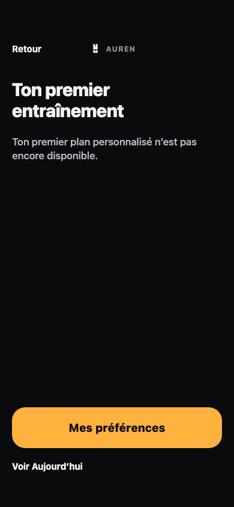
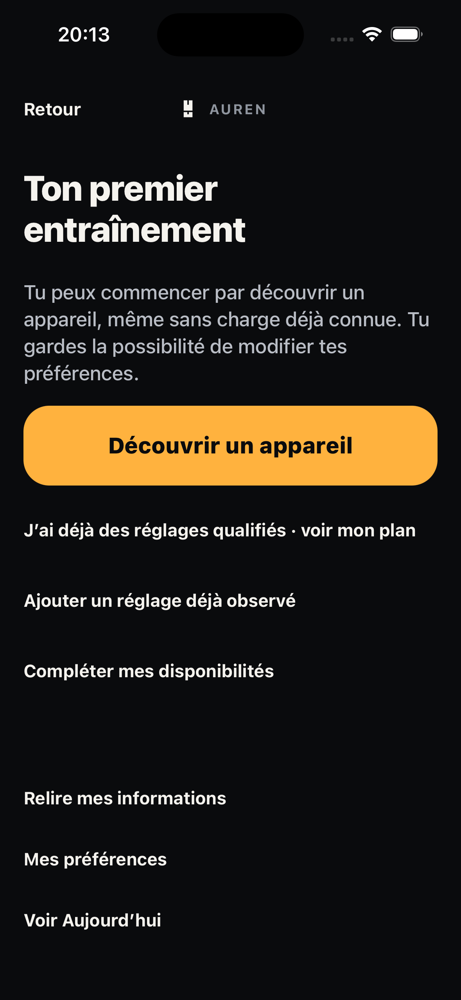
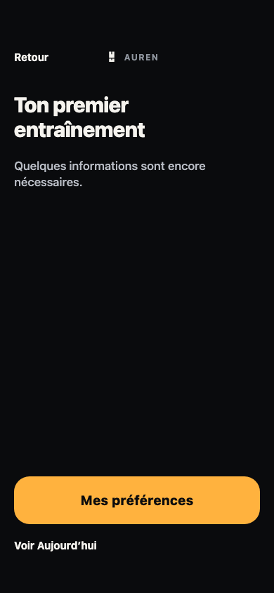
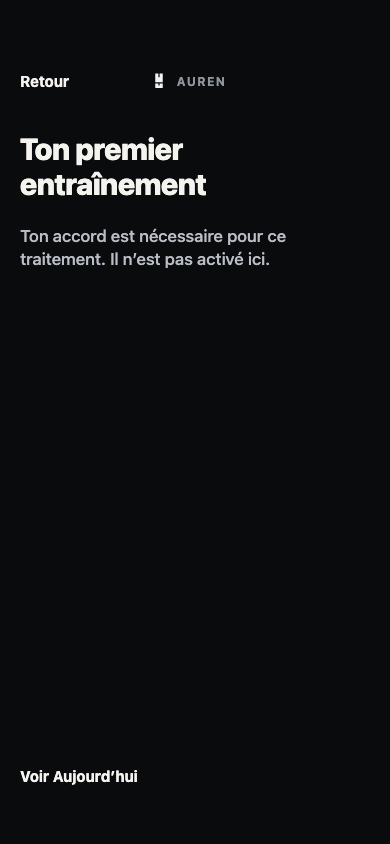
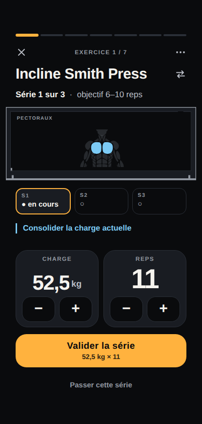
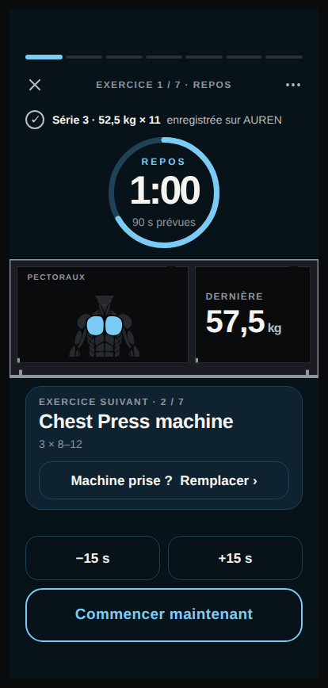
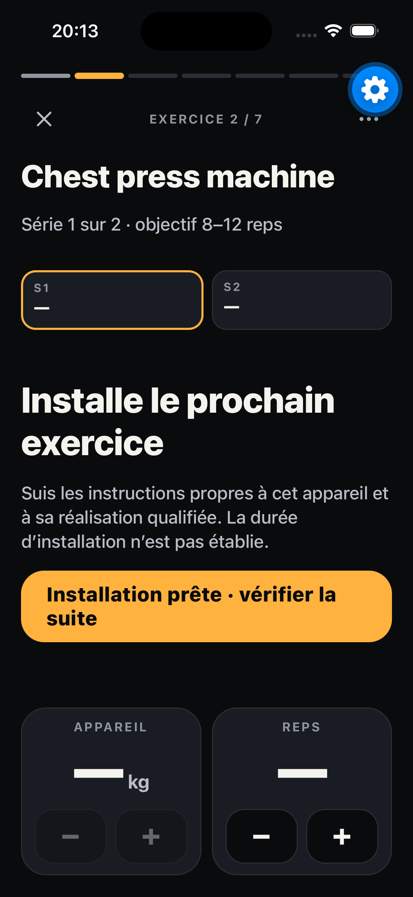
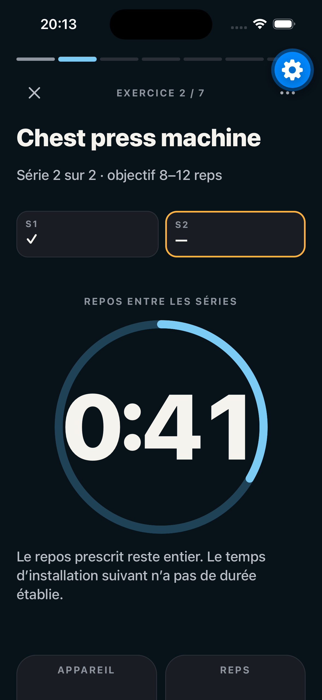
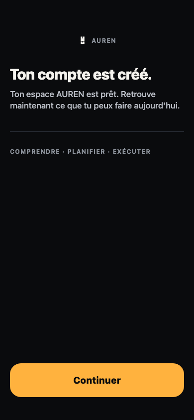

PLAN V3 · revue visuelle avant commit
Pixels acceptés par l’opérateur le 8 novembre 2026 : « Valider ces pixels PLAN contrôlés ». Croquis G1 accepté. Captures brutes de la vraie app Expo Go 58, iPhone 16 simulé iOS 26.3 dédié, 393×852 points (PNG 1179×2556). Références web/native 390×844 selon leur manifeste ; affichage commun à 390 px, sans prétendre à une identité pixel ou une recette physique. Pas de capture recomposée, de READY injecté ou de nouvelle baseline.
Parcours contrôlé : première rencontre → observations réelles de test → producteur SCI → accord temporel → une séance possédée → journal/reprise/correction. Les six autres observations ont été soumises explicitement via HTTP de test, et non acquises par un pilote universel. MISSION reste verrouillée et inchangée.
Premier passage progressif
Référence MOB03 : même cadre compte. Nouveau contenu : calibration ouverte sans sept réglages.
Référence validée · primitives/composition
Rendu natif contrôlé · entrée synthétique
Installation sans charge choisie
Champ numérique vide. Le bouton demande uniquement une familiarisation ; aucun essai ou succès créé.
Référence validée · primitives/composition
Rendu natif contrôlé · entrée synthétique
Première séance réelle proposée
Vrai producteur, entrées synthétiques du compte B. Capture du haut : la séance 1 est détaillée. Le code final masque la séance 2 (D9), sans changer les pixels visibles ici.
Référence validée · primitives/compositionRendu natif contrôlé · entrée synthétique
Reconnaissance explicite du temps inconnu
Budget déclaré distinct de durée. Cette capture B précède tout clic d’accord de B.
Référence validée · primitives/composition
Rendu natif contrôlé · entrée synthétique
Prescription et fait typés
Séance A réellement créée. Même instrument existant ; kg affichés par cet appareil, jamais total calculé. Pastille flottante Expo de test présente.
Référence validée · primitives/composition
Rendu natif contrôlé · entrée synthétique
Changement d’exercice sans faux chrono
Installation suivante : durée non établie. Référence de composition seulement, scénario différent ; aucun repos supplémentaire inventé. Pastille Expo de test présente.
Référence validée · primitives/composition
Rendu natif contrôlé · entrée synthétique
Repos prescrit entre séries
Repos réel 120 s du binding, capture en cours de décompte. Scénarios distincts, aucune comparaison scientifique des charges. Pastille Expo de test présente.
Référence validée · primitives/compositionRendu natif contrôlé · entrée synthétique
Faits et refus conservés après correction
Nouvelle surface factuelle dans AccountFrame : serveur 12 reps/version 3 ; ancienne correction 10 refusée conservée séparément. La référence fournit les primitives, pas un journal historique identique.
Référence validée · primitives/composition
Rendu natif contrôlé · entrée synthétique